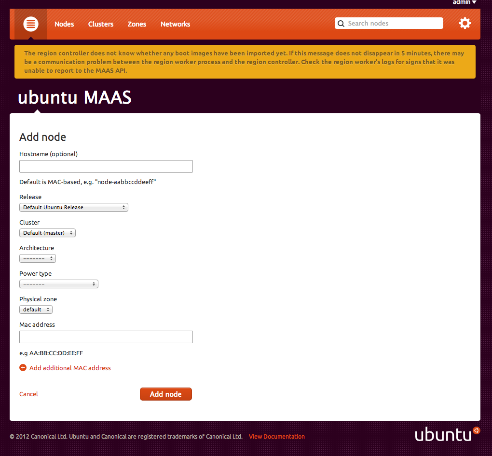
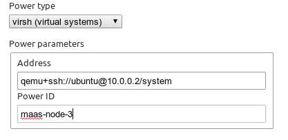

Now that the MAAS controller is running, we need to make the nodes aware of MAAS and vice-versa. If you have set up DHCP correctly, and your nodes can boot via PXE then things really couldn't be much easier and you can use the automatic discovery procedure <auto-enlist>. You do not need to install Ubuntu on nodes that you wish to add to MAAS prior to enlistment.
To learn more about setting up DHCP, read the cluster configuration documentation <cluster-configuration>.
With nodes set to boot from a PXE image, they will start, look for a DHCP server, receive the PXE boot details, boot the image, contact the MAAS server and shut down.
During this process, the MAAS server will be passed information about the node, including the architecture, MAC address and other details which will be stored in the database of nodes. You can accept and commission the nodes via the web interface. When the nodes have been accepted the selected series of Ubuntu will be installed.
To save time, you can also accept and commission all nodes from the commandline. This requires that you first log in with the API key, which you can retrieve from the web interface <api-key>:
$ maas maas nodes accept-allIf you know the MAC address of a node, you can manually enter details about the node through the web interface. Click the Add Node button to be taken to the "Add Node" form:

If you're setting up virtual machines to use as nodes with MAAS, you need to configure the power type as virsh. For MAAS to be able to use virsh, make sure you have the libvirt-bin package installed.
The virsh power type takes two parameters:
The Power ID is the name of the virtual machine shown by sudo virsh list --all
This is a libvirt connection string, such as qemu+ssh://ubuntu@10.0.0.2/system or qemu:///system

If you want to use ssh you'll need to generate a ssh key pair for the maas user. By default there is no home directory created for the maas user:
$ sudo mkdir /home/maas
$ sudo chown maas:maas /home/maasAdd a login shell for the maas user:
$ sudo chsh -s /bin/bash maasBecome the maas user and generate a SSH keypair:
$ sudo su - maas
$ ssh-keygenThen add the public key to /ubuntu/.ssh/authorized_keys on the vm server so virsh can use ssh without a password:
$ ssh-copy-id -i ~/.ssh/id_rsa ubuntu@10.0.0.2As the maas user, test virsh commands against libvirt at 10.0.0.2:
$ virsh -c qemu+ssh://ubuntu@10.0.0.2/system list --all